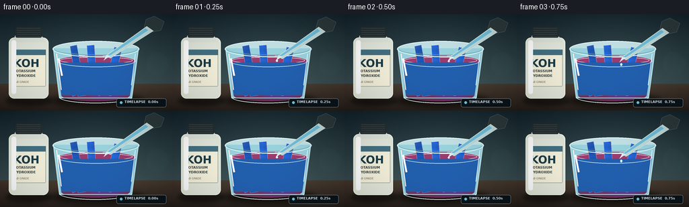
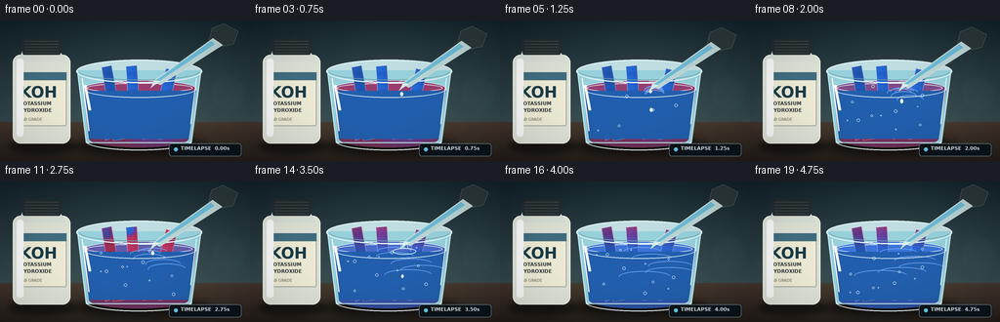
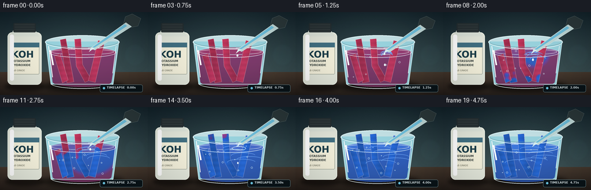
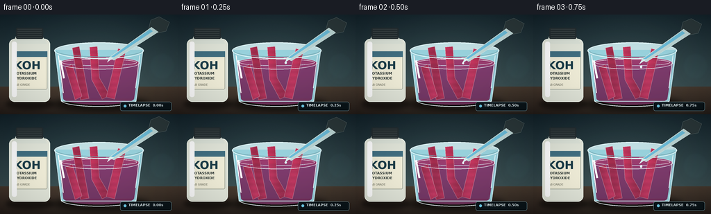

CODING AGENTS AS PIXEL WORLD MODELS
traex/GPT-5.6-Sol · material_0033
点击播放 · 原生 RGB 像素
逐轮保存的候选
回放视频、检查图与代码变化。
每份候选均可单独播放。实际图片检查记录在下方工具轨迹中。
候选 01播放与检查图
点击播放 · 原生 RGB 像素


展开代码变化
--- 上一保存版本
+++ 本次保存版本
@@ -0,0 +1,266 @@
+from pathlib import Path
+import math
+import numpy as np
+from PIL import Image, ImageDraw, ImageFont, ImageFilter
+import artifact_io
+
+CASE_DIR = Path(__file__).resolve().parent
+W, H, N = 256, 144, 20
+SS = 4
+SW, SH = W*SS, H*SS
+
+# deterministic texture
+rng = np.random.default_rng(33)
+
+font_paths = [
+ '/usr/share/fonts/truetype/dejavu/DejaVuSans.ttf',
+ '/usr/share/fonts/truetype/liberation2/LiberationSans-Regular.ttf'
+]
+bold_paths = [
+ '/usr/share/fonts/truetype/dejavu/DejaVuSans-Bold.ttf',
+ '/usr/share/fonts/truetype/liberation2/LiberationSans-Bold.ttf'
+]
+def font(size, bold=False):
+ paths = bold_paths if bold else font_paths
+ for p in paths:
+ if Path(p).exists(): return ImageFont.truetype(p, size*SS)
+ return ImageFont.load_default()
+
+def sc(v): return int(round(v*SS))
+def pts(seq): return [(sc(x),sc(y)) for x,y in seq]
+def smoothstep(a,b,x):
+ x=np.clip((x-a)/(b-a),0,1)
+ return x*x*(3-2*x)
+def mix(a,b,t): return tuple(int(a[i]*(1-t)+b[i]*t) for i in range(len(a)))
+
+def ellipse(draw, box, **kw): draw.ellipse(tuple(sc(v) for v in box), **kw)
+def rect(draw, box, **kw): draw.rectangle(tuple(sc(v) for v in box), **kw)
+def line(draw, xy, **kw): draw.line(pts(xy), **kw)
+
+def make_background(i):
+ # Deep laboratory wall and warm bench, with subtle natural time-lapse exposure flicker.
+ yy, xx = np.mgrid[0:SH,0:SW]
+ horizon = sc(104)
+ top = np.array([18,34,42.],float); bot = np.array([52,72,76.],float)
+ t = np.clip(yy[...,None]/horizon,0,1)
+ arr = top*(1-t)+bot*t
+ bench_top=np.array([66,52,42.]); bench_bot=np.array([35,28,24.])
+ tb=np.clip((yy-horizon)/max(1,SH-horizon),0,1)[...,None]
+ bench=bench_top*(1-tb)+bench_bot*tb
+ arr=np.where((yy>=horizon)[...,None],bench,arr)
+ # localized glow around apparatus
+ glow=np.exp(-(((xx-sc(145))/sc(100))**2+((yy-sc(65))/sc(85))**2))[...,None]
+ arr += glow*np.array([12,14,12.])
+ flicker=0.7*math.sin(i*0.7)+0.35*math.sin(i*1.9)
+ arr += flicker
+ noise=rng.normal(0,0.65,(SH,SW,1))
+ arr=np.clip(arr+noise,0,255).astype(np.uint8)
+ return Image.fromarray(arr,'RGB')
+
+def soft_shape(size, draw_fn, blur=4, color=(0,0,0,100)):
+ layer=Image.new('RGBA',size,(0,0,0,0)); d=ImageDraw.Draw(layer)
+ draw_fn(d,color)
+ return layer.filter(ImageFilter.GaussianBlur(sc(blur)))
+
+def polygon_mask(poly):
+ m=Image.new('L',(SW,SH),0); ImageDraw.Draw(m).polygon(pts(poly),fill=255)
+ return m
+
+def colored_paper(base, poly, blue_amount, seed_offset=0, immersed=True):
+ """Paint a fibrous strip, with blue transformation moving irregularly through it."""
+ mask=polygon_mask(poly)
+ yy,xx=np.mgrid[0:SH,0:SW]
+ # blue_amount controls a top-to-bottom / contact-driven chemical front.
+ # use spatial waviness so intermediate frames look like diffusion rather than a crossfade.
+ xnorm=xx/SW; ynorm=yy/SH
+ wav=0.055*np.sin(xx/sc(4.3)+seed_offset)+0.03*np.sin(yy/sc(3.1)+seed_offset*1.7)
+ # threshold sweeps upward along the papers from liquid contact and out from drop point
+ front = smoothstep(1.12-blue_amount*1.25+wav, 0.97-blue_amount*1.25+wav, ynorm)
+ # global later conversion makes the exposed upper portions turn via capillary action
+ cap=smoothstep(.48,.94,blue_amount)*smoothstep(.18,.55,ynorm)
+ chem=np.clip(np.maximum(front,cap),0,1)
+ red=np.array([170,43,78.]); violet=np.array([105,53,137.]); blue=np.array([29,88,188.])
+ early=smoothstep(0,.53,chem)[...,None]
+ late=smoothstep(.44,1,chem)[...,None]
+ col=red*(1-early)+violet*early
+ col=col*(1-late)+blue*late
+ # paper illumination and fibrous variation
+ shade=(1+0.10*np.sin(xx/sc(7)+seed_offset)+0.035*np.sin(yy/sc(1.4)))[...,None]
+ col=np.clip(col*shade+6,0,255).astype(np.uint8)
+ lay=Image.fromarray(np.dstack([col,np.array(mask)]).astype(np.uint8),'RGBA')
+ base.alpha_composite(lay)
+ d=ImageDraw.Draw(base,'RGBA')
+ # edge, center fiber and speckles clipped approximately by using mask paste below
+ edge=Image.new('RGBA',(SW,SH),(0,0,0,0)); ed=ImageDraw.Draw(edge,'RGBA')
+ ed.line(pts(poly+[poly[0]]),fill=(235,212,219,90),width=sc(.7),joint='curve')
+ fibers=Image.new('RGBA',(SW,SH),(0,0,0,0)); fd=ImageDraw.Draw(fibers,'RGBA')
+ local=np.random.default_rng(900+seed_offset)
+ xs=[p[0] for p in poly]; ys=[p[1] for p in poly]
+ for _ in range(38):
+ x=local.uniform(min(xs),max(xs)); y=local.uniform(min(ys),max(ys))
+ fd.line([(sc(x),sc(y)),(sc(x+local.uniform(-2,2)),sc(y+local.uniform(-.2,.4)))],fill=(255,255,255,35),width=sc(.28))
+ fibers.putalpha(Image.composite(fibers.getchannel('A'),Image.new('L',(SW,SH),0),mask))
+ base.alpha_composite(fibers); base.alpha_composite(edge)
+
+def draw_bottle(base):
+ # Soft bottle shadow
+ shadow=soft_shape((SW,SH),lambda d,c:d.ellipse((sc(8),sc(121),sc(79),sc(137)),fill=c),3,(0,0,0,125))
+ base.alpha_composite(shadow)
+ d=ImageDraw.Draw(base,'RGBA')
+ # bottle body, shoulder, neck and cap
+ d.rounded_rectangle((sc(13),sc(35),sc(72),sc(126)),radius=sc(8),fill=(226,230,218,245),outline=(242,248,238,255),width=sc(1.1))
+ d.polygon(pts([(18,42),(23,31),(61,31),(68,42)]),fill=(219,226,216,250))
+ d.rounded_rectangle((sc(23),sc(19),sc(62),sc(35)),radius=sc(2),fill=(36,45,48,255))
+ for y in range(21,34,3):
+ d.line([(sc(25),sc(y)),(sc(60),sc(y))],fill=(75,84,84,220),width=sc(.5))
+ # label and bottle highlight
+ d.rounded_rectangle((sc(17),sc(53),sc(68),sc(108)),radius=sc(2),fill=(242,239,218,255),outline=(152,159,145,255),width=sc(.7))
+ d.rectangle((sc(17),sc(53),sc(68),sc(61)),fill=(66,112,130,255))
+ d.text((sc(20),sc(64)),"KOH",font=font(16,True),fill=(27,61,73,255),stroke_width=0)
+ d.text((sc(20),sc(82)),"POTASSIUM",font=font(5,True),fill=(48,58,56,255))
+ d.text((sc(20),sc(89)),"HYDROXIDE",font=font(5,True),fill=(48,58,56,255))
+ d.text((sc(20),sc(99)),"LAB GRADE",font=font(4,False),fill=(91,92,78,255))
+ d.rounded_rectangle((sc(17),sc(39),sc(24),sc(119)),radius=sc(3),fill=(255,255,255,48))
+
+def draw_glass_and_contents(base,i):
+ d=ImageDraw.Draw(base,'RGBA')
+ p=i/(N-1)
+ reaction=smoothstep(.16,.92,p)
+ # floor shadow
+ base.alpha_composite(soft_shape((SW,SH),lambda q,c:q.ellipse((sc(76),sc(119),sc(215),sc(139)),fill=c),4,(0,0,0,150)))
+ # back glass silhouette
+ d.ellipse((sc(78),sc(40),sc(207),sc(64)),fill=(195,225,229,35),outline=(224,245,247,170),width=sc(1.2))
+ d.polygon(pts([(79,51),(88,125),(196,125),(206,51)]),fill=(153,211,222,18))
+ # liquid body -- color change radiating from KOH entry point
+ yy,xx=np.mgrid[0:SH,0:SW]
+ liquid_mask=Image.new('L',(SW,SH),0); md=ImageDraw.Draw(liquid_mask)
+ md.polygon(pts([(85,69),(91,121),(193,121),(201,69)]),fill=235)
+ md.ellipse((sc(85),sc(61),sc(201),sc(79)),fill=235)
+ md.ellipse((sc(91),sc(112),sc(193),sc(130)),fill=235)
+ # radial chemical diffusion front from drop landing near x=158, y=68, plus global mixing
+ dist=np.sqrt(((xx-sc(158))/sc(62))**2+((yy-sc(72))/sc(58))**2)
+ radial=smoothstep(1.07-reaction*1.22, .68-reaction*1.22, dist)
+ global_mix=smoothstep(.48,.98,reaction)*np.ones_like(dist)
+ chem=np.clip(np.maximum(radial,global_mix),0,1)
+ warm=np.array([117,38,84.]); mid=np.array([97,48,139.]); blu=np.array([23,82,184.])
+ q=smoothstep(0,.48,chem)[...,None]; r=smoothstep(.38,1,chem)[...,None]
+ rgb=warm*(1-q)+mid*q; rgb=rgb*(1-r)+blu*r
+ depth=((yy-sc(63))/sc(70))[...,None]
+ rgb=np.clip(rgb*(.92-.18*np.clip(depth,0,1))+np.array([28,24,32.]),0,255)
+ alpha=np.array(liquid_mask).astype(np.uint8)
+ liquid=Image.fromarray(np.dstack([rgb.astype(np.uint8),alpha]),'RGBA')
+ base.alpha_composite(liquid)
+ # rear liquid meniscus
+ d=ImageDraw.Draw(base,'RGBA')
+ men=mix((154,61,111,210),(60,118,220,220),reaction)
+ d.ellipse((sc(85),sc(61),sc(201),sc(79)),fill=men,outline=(209,231,238,135),width=sc(.8))
+ d.ellipse((sc(89),sc(64),sc(197),sc(74)),outline=(244,250,249,48),width=sc(.7))
+
+ # Litmus papers inside: tall center strip and two bent strips. Draw behind/front ordering.
+ papers=[
+ ([(104,48),(114,46),(128,121),(116,123)],1),
+ ([(129,47),(140,46),(143,91),(158,117),(147,122),(132,94)],2),
+ ([(170,49),(181,52),(165,122),(153,119)],3),
+ ([(94,76),(104,72),(118,118),(108,123)],4),
+ ]
+ # Initial paper is unmistakably red litmus; conversion grows over the timelapse.
+ for poly,s in papers:
+ colored_paper(base,poly,reaction,s)
+
+ d=ImageDraw.Draw(base,'RGBA')
+ # solution overlays on submerged strips to sell glass + liquid depth
+ d.polygon(pts([(86,72),(91,121),(193,121),(200,72)]),fill=(34,96,175,int(16+reaction*16)))
+ # Caustic swirls / mixing fronts
+ if reaction>0.04:
+ for k in range(5):
+ phase=p*5.8+k*1.24
+ cx=158+math.sin(phase)*reaction*(13+3*k)
+ cy=74+reaction*(5.5*k)+math.cos(phase*.72)*3
+ rx=9+reaction*(10+2*k)
+ col=(108,165,247,int(45*(1-k/6)*reaction))
+ d.arc((sc(cx-rx),sc(cy-4-k*.4),sc(cx+rx),sc(cy+4+k*.4)),start=175,end=350,fill=col,width=sc(.8))
+ # bubbles indicating reaction/mixing
+ for k in range(12):
+ onset=.21+(k%5)*.035
+ if p>onset:
+ bx=101+(k*23)%88+2.2*math.sin(i*.7+k)
+ by=116-((p-onset)*65+k*7)%49
+ rad=.7+(k%3)*.45
+ d.ellipse((sc(bx-rad),sc(by-rad),sc(bx+rad),sc(by+rad)),outline=(219,244,251,125),width=sc(.55))
+ # Front wall and heavy rim, highlights, refraction lines
+ d.line(pts([(79,51),(88,125),(196,125),(206,51)]),fill=(205,237,244,130),width=sc(1.1),joint='curve')
+ d.ellipse((sc(78),sc(40),sc(207),sc(64)),outline=(228,248,250,220),width=sc(1.35))
+ d.arc((sc(81),sc(44),sc(204),sc(61)),start=4,end=177,fill=(112,160,168,130),width=sc(.8))
+ d.arc((sc(88),sc(115),sc(196),sc(133)),start=0,end=180,fill=(235,251,252,150),width=sc(1))
+ d.line(pts([(84,59),(91,113)]),fill=(255,255,255,140),width=sc(1.3))
+ d.line(pts([(87,66),(92,92)]),fill=(255,255,255,65),width=sc(2.8))
+ d.line(pts([(201,59),(195,106)]),fill=(233,251,253,88),width=sc(.9))
+ # foreground meniscus highlight
+ d.arc((sc(85),sc(61),sc(201),sc(79)),start=0,end=180,fill=(235,251,253,170),width=sc(.75))
+
+def draw_dropper(base,i):
+ d=ImageDraw.Draw(base,'RGBA')
+ p=i/(N-1)
+ # approach and retreat in a smooth short time-lapse motion
+ approach=math.sin(min(1,p/.62)*math.pi)
+ dx=-2.0*approach; dy=4.0*approach
+ # dropper axis from upper-right to beaker
+ bulb=[(229+dx,3+dy),(244+dx,11+dy),(239+dx,24+dy),(224+dx,27+dy),(214+dx,20+dy),(217+dx,8+dy)]
+ d.polygon(pts(bulb),fill=(43,56,58,255),outline=(128,145,143,230))
+ d.polygon(pts([(218+dx,18+dy),(228+dx,25+dy),(164+dx,66+dy),(157+dx,62+dy)]),fill=(190,216,215,210),outline=(235,249,246,210))
+ d.polygon(pts([(216+dx,21+dy),(220+dx,24+dy),(163+dx,62+dy),(160+dx,61+dy)]),fill=(109,190,219,120))
+ # clear tapered tip
+ d.polygon(pts([(164+dx,62+dy),(158+dx,66+dy),(154+dx,69+dy),(158+dx,62+dy)]),fill=(214,239,239,190),outline=(244,255,255,190))
+ # Three dosing events with descending droplets; always show at most one dominant drop.
+ events=[(2,6),(6,10),(10,14)]
+ for ei,(start,end) in enumerate(events):
+ if start<=i<=end:
+ u=(i-start)/(end-start)
+ x=156+dx+1.0*math.sin(u*math.pi)
+ y=68+dy+(u**1.35)*29
+ rad=1.25+0.25*math.sin(u*math.pi)
+ # elongated transparent KOH droplet
+ d.ellipse((sc(x-rad),sc(y-rad*1.4),sc(x+rad),sc(y+rad*1.4)),fill=(218,247,252,230),outline=(255,255,255,225),width=sc(.45))
+ d.ellipse((sc(x-.45),sc(y-rad*.9),sc(x+.1),sc(y-.2)),fill=(255,255,255,170))
+ # bead at tip between drops
+ if i in (1,5,9,13):
+ x,y=156+dx,68+dy
+ d.ellipse((sc(x-1.5),sc(y-1),sc(x+1.5),sc(y+2.3)),fill=(218,247,252,225),outline=(255,255,255,210))
+ # impact ripple during relevant moments
+ if i in (6,10,14):
+ k={6:1,10:2,14:3}[i]
+ d.ellipse((sc(149-k),sc(69-k*.25),sc(167+k),sc(74+k*.25)),outline=(228,250,255,190),width=sc(.7))
+ for a in [-4,0,4]:
+ d.line(pts([(158+a,69),(158+a*.7,66-k)]),fill=(227,249,252,170),width=sc(.55))
+
+def draw_overlay(base,i):
+ d=ImageDraw.Draw(base,'RGBA')
+ # clean time-lapse badge, like an educational lab shot
+ d.rounded_rectangle((sc(173),sc(126),sc(247),sc(139)),radius=sc(3),fill=(10,20,25,170),outline=(124,161,171,90),width=sc(.5))
+ d.ellipse((sc(178),sc(130),sc(182),sc(134)),fill=(109,202,231,255))
+ d.text((sc(185),sc(128)),f"TIMELAPSE {i/4:04.2f}s",font=font(5,True),fill=(226,240,243,235))
+
+frames=[]
+for i in range(N):
+ rgb=make_background(i)
+ base=rgb.convert('RGBA')
+ # muted bokeh glassware in the background
+ bk=Image.new('RGBA',(SW,SH),(0,0,0,0)); bd=ImageDraw.Draw(bk,'RGBA')
+ bd.ellipse((sc(207),sc(41),sc(260),sc(105)),outline=(138,187,191,28),width=sc(2))
+ bd.ellipse((sc(215),sc(55),sc(252),sc(94)),fill=(78,137,143,12))
+ bk=bk.filter(ImageFilter.GaussianBlur(sc(2.2))); base.alpha_composite(bk)
+ draw_bottle(base)
+ draw_glass_and_contents(base,i)
+ draw_dropper(base,i)
+ draw_overlay(base,i)
+ # Final camera-level vignette and downsample
+ arr=np.asarray(base.convert('RGB')).astype(np.float32)
+ yy,xx=np.mgrid[0:SH,0:SW]
+ vig=1-.18*np.clip(((xx-SW/2)/(SW*.68))**2+((yy-SH/2)/(SH*.75))**2,0,1)
+ arr=np.clip(arr*vig[...,None],0,255).astype(np.uint8)
+ im=Image.fromarray(arr,'RGB').resize((W,H),Image.Resampling.LANCZOS)
+ frames.append(np.asarray(im,dtype=np.uint8))
+
+frames=np.stack(frames,axis=0)
+artifact_io.save(frames, CASE_DIR)
+print(f"saved {frames.shape} {frames.dtype} to {CASE_DIR}")
候选 02播放与检查图
点击播放 · 原生 RGB 像素

展开代码变化
--- 上一保存版本
+++ 本次保存版本
@@ -75,7 +75,7 @@
xnorm=xx/SW; ynorm=yy/SH
wav=0.055*np.sin(xx/sc(4.3)+seed_offset)+0.03*np.sin(yy/sc(3.1)+seed_offset*1.7)
# threshold sweeps upward along the papers from liquid contact and out from drop point
- front = smoothstep(1.12-blue_amount*1.25+wav, 0.97-blue_amount*1.25+wav, ynorm)
+ front = smoothstep(1.02-blue_amount*.90+wav, 1.10-blue_amount*.90+wav, ynorm)
# global later conversion makes the exposed upper portions turn via capillary action
cap=smoothstep(.48,.94,blue_amount)*smoothstep(.18,.55,ynorm)
chem=np.clip(np.maximum(front,cap),0,1)
@@ -139,7 +139,8 @@
md.ellipse((sc(91),sc(112),sc(193),sc(130)),fill=235)
# radial chemical diffusion front from drop landing near x=158, y=68, plus global mixing
dist=np.sqrt(((xx-sc(158))/sc(62))**2+((yy-sc(72))/sc(58))**2)
- radial=smoothstep(1.07-reaction*1.22, .68-reaction*1.22, dist)
+ radius=.02+reaction*1.35
+ radial=1-smoothstep(radius-.12, radius+.12, dist)
global_mix=smoothstep(.48,.98,reaction)*np.ones_like(dist)
chem=np.clip(np.maximum(radial,global_mix),0,1)
warm=np.array([117,38,84.]); mid=np.array([97,48,139.]); blu=np.array([23,82,184.])
候选 03播放与检查图
候选 04播放与检查图
点击播放 · 原生 RGB 像素


展开代码变化
--- 上一保存版本
+++ 本次保存版本
@@ -169,8 +169,12 @@
colored_paper(base,poly,reaction,s)
d=ImageDraw.Draw(base,'RGBA')
- # solution overlays on submerged strips to sell glass + liquid depth
- d.polygon(pts([(86,72),(91,121),(193,121),(200,72)]),fill=(34,96,175,int(16+reaction*16)))
+ # A genuinely alpha-composited foreground solution veil sells refraction without
+ # replacing the RGB of the litmus papers below it.
+ veil=Image.new('RGBA',(SW,SH),(0,0,0,0)); vd=ImageDraw.Draw(veil)
+ vd.polygon(pts([(86,72),(91,121),(193,121),(200,72)]),fill=(46,105,181,int(10+reaction*15)))
+ base.alpha_composite(veil)
+ d=ImageDraw.Draw(base,'RGBA')
# Caustic swirls / mixing fronts
if reaction>0.04:
for k in range(5):
可观测工具轨迹
实际执行的命令与返回图片。
命令 1exit 0
/bin/bash -lc "cat prompt.txt && printf '\\n--- GENERATION_RULES.md ---\\n' && cat GENERATION_RULES.md && printf '\\n--- task_spec.json ---\\n' && cat task_spec.json"
命令 2exit 0
/bin/bash -lc "find . -maxdepth 3 -type f -printf '%p\\n' | sort && printf '\\n--- tools ---\\n' && command -v ffmpeg || true; command -v python3 || true; python3 - <<'PY' mods=['PIL','numpy','cv2','cairo','imageio','moviepy'] for m in mods: try: x=__import__(m); print(m, 'OK', getattr(x,'__version__','')) except Exception as e: print(m,'NO',e) PY"
命令 3exit 0
/bin/bash -lc 'cat artifact_io.py'
命令 4exit 0
/bin/bash -lc "cat > generate.py <<'PY'
from pathlib import Path
import math
import numpy as np
from PIL import Image, ImageDraw, ImageFont, ImageFilter
import artifact_io
CASE_DIR = Path(__file__).resolve().parent
W, H, N = 256, 144, 20
SS = 4
SW, SH = W*SS, H*SS
# deterministic texture
rng = np.random.default_rng(33)
font_paths = [
'/usr/share/fonts/truetype/dejavu/DejaVuSans.ttf',
'/usr/share/fonts/truetype/liberation2/LiberationSans-Regular.ttf'
]
bold_paths = [
'/usr/share/fonts/truetype/dejavu/DejaVuSans-Bold.ttf',
'/usr/share/fonts/truetype/liberation2/LiberationSans-Bold.ttf'
]
def font(size, bold=False):
paths = bold_paths if bold else font_paths
for p in paths:
if Path(p).exists(): return ImageFont.truetype(p, size*SS)
return ImageFont.load_default()
def sc(v): return int(round(v*SS))
def pts(seq): return [(sc(x),sc(y)) for x,y in seq]
def smoothstep(a,b,x):
x=np.clip((x-a)/(b-a),0,1)
return x*x*(3-2*x)
def mix(a,b,t): return tuple(int(a[i]*(1-t)+b[i]*t) for i in range(len(a)))
def ellipse(draw, box, **kw): draw.ellipse(tuple(sc(v) for v in box), **kw)
def rect(draw, box, **kw): draw.rectangle(tuple(sc(v) for v in box), **kw)
def line(draw, xy, **kw): draw.line(pts(xy), **kw)
def make_background(i):
# Deep laboratory wall and warm bench, with subtle natural time-lapse exposure flicker.
yy, xx = np.mgrid[0:SH,0:SW]
horizon = sc(104)
top = np.array([18,34,42.],float); bot = np.array([52,72,76.],float)
t = np.clip(yy[...,None]/horizon,0,1)
arr = top*(1-t)+bot*t
bench_top=np.array([66,52,42.]); bench_bot=np.array([35,28,24.])
tb=np.clip((yy-horizon)/max(1,SH-horizon),0,1)[...,None]
bench=bench_top*(1-tb)+bench_bot*tb
arr=np.where((yy>=horizon)[...,None],bench,arr)
# localized glow around apparatus
glow=np.exp(-(((xx-sc(145))/sc(100))**2+((yy-sc(65))/sc(85))**2))[...,None]
arr += glow*np.array([12,14,12.])
flicker=0.7*math.sin(i*0.7)+0.35*math.sin(i*1.9)
arr += flicker
noise=rng.normal(0,0.65,(SH,SW,1))
arr=np.clip(arr+noise,0,255).astype(np.uint8)
return Image.fromarray(arr,'RGB')
def soft_shape(size, draw_fn, blur=4, color=(0,0,0,100)):
layer=Image.new('RGBA',size,(0,0,0,0)); d=ImageDraw.Draw(layer)
draw_fn(d,color)
return layer.filter(ImageFilter.GaussianBlur(sc(blur)))
def polygon_mask(poly):
m=Image.new('L',(SW,SH),0); ImageDraw.Draw(m).polygon(pts(poly),fill=255)
return m
def colored_paper(base, poly, blue_amount, seed_offset=0, immersed=True):
\"\"\"Paint a fibrous strip, with blue transformation moving irregularly through it.\"\"\"
mask=polygon_mask(poly)
yy,xx=np.mgrid[0:SH,0:SW]
# blue_amount controls a top-to-bottom / contact-driven chemical front.
# use spatial waviness so intermediate frames look like diffusion rather than a crossfade.
xnorm=xx/SW; ynorm=yy/SH
wav=0.055*np.sin(xx/sc(4.3)+seed_offset)+0.03*np.sin(yy/sc(3.1)+seed_offset*1.7)
# threshold sweeps upward along the papers from liquid contact and out from drop point
front = smoothstep(1.12-blue_amount*1.25+wav, 0.97-blue_amount*1.25+wav, ynorm)
# global later conversion makes the exposed upper portions turn via capillary action
cap=smoothstep(.48,.94,blue_amount)*smoothstep(.18,.55,ynorm)
chem=np.clip(np.maximum(front,cap),0,1)
red=np.array([170,43,78.]); violet=np.array([105,53,137.]); blue=np.array([29,88,188.])
early=smoothstep(0,.53,chem)[...,None]
late=smoothstep(.44,1,chem)[...,None]
col=red*(1-early)+violet*early
col=col*(1-late)+blue*late
# paper illumination and fibrous variation
shade=(1+0.10*np.sin(xx/sc(7)+seed_offset)+0.035*np.sin(yy/sc(1.4)))[...,None]
col=np.clip(col*shade+6,0,255).astype(np.uint8)
lay=Image.fromarray(np.dstack([col,np.array(mask)]).astype(np.uint8),'RGBA')
base.alpha_composite(lay)
d=ImageDraw.Draw(base,'RGBA')
# edge, center fiber and speckles clipped approximately by using mask paste below
edge=Image.new('RGBA',(SW,SH),(0,0,0,0)); ed=ImageDraw.Draw(edge,'RGBA')
ed.line(pts(poly+[poly[0]]),fill=(235,212,219,90),width=sc(.7),joint='curve')
fibers=Image.new('RGBA',(SW,SH),(0,0,0,0)); fd=ImageDraw.Draw(fibers,'RGBA')
local=np.random.default_rng(900+seed_offset)
xs=[p[0] for p in poly]; ys=[p[1] for p in poly]
for _ in range(38):
x=local.uniform(min(xs),max(xs)); y=local.uniform(min(ys),max(ys))
fd.line([(sc(x),sc(y)),(sc(x+local.uniform(-2,2)),sc(y+local.uniform(-.2,.4)))],fill=(255,255,255,35),width=sc(.28))
fibers.putalpha(Image.composite(fibers.getchannel('A'),Image.new('L',(SW,SH),0),mask))
base.alpha_composite(fibers); base.alpha_composite(edge)
def draw_bottle(base):
# Soft bottle shadow
shadow=soft_shape((SW,SH),lambda d,c:d.ellipse((sc(8),sc(121),sc(79),sc(137)),fill=c),3,(0,0,0,125))
base.alpha_composite(shadow)
d=ImageDraw.Draw(base,'RGBA')
# bottle body, shoulder, neck and cap
d.rounded_rectangle((sc(13),sc(35),sc(72),sc(126)),radius=sc(8),fill=(226,230,218,245),outline=(242,248,238,255),width=sc(1.1))
d.polygon(pts([(18,42),(23,31),(61,31),(68,42)]),fill=(219,226,216,250))
d.rounded_rectangle((sc(23),sc(19),sc(62),sc(35)),radius=sc(2),fill=(36,45,48,255))
for y in range(21,34,3):
d.line([(sc(25),sc(y)),(sc(60),sc(y))],fill=(75,84,84,220),width=sc(.5))
# label and bottle highlight
d.rounded_rectangle((sc(17),sc(53),sc(68),sc(108)),radius=sc(2),fill=(242,239,218,255),outline=(152,159,145,255),width=sc(.7))
d.rectangle((sc(17),sc(53),sc(68),sc(61)),fill=(66,112,130,255))
d.text((sc(20),sc(64)),\"KOH\",font=font(16,True),fill=(27,61,73,255),stroke_width=0)
d.text((sc(20),sc(82)),\"POTASSIUM\",font=font(5,True),fill=(48,58,56,255))
d.text((sc(20),sc(89)),\"HYDROXIDE\",font=font(5,True),fill=(48,58,56,255))
d.text((sc(20),sc(99)),\"LAB GRADE\",font=font(4,False),fill=(91,92,78,255))
d.rounded_rectangle((sc(17),sc(39),sc(24),sc(119)),radius=sc(3),fill=(255,255,255,48))
def draw_glass_and_contents(base,i):
d=ImageDraw.Draw(base,'RGBA')
p=i/(N-1)
reaction=smoothstep(.16,.92,p)
# floor shadow
base.alpha_composite(soft_shape((SW,SH),lambda q,c:q.ellipse((sc(76),sc(119),sc(215),sc(139)),fill=c),4,(0,0,0,150)))
# back glass silhouette
d.ellipse((sc(78),sc(40),sc(207),sc(64)),fill=(195,225,229,35),outline=(224,245,247,170),width=sc(1.2))
d.polygon(pts([(79,51),(88,125),(196,125),(206,51)]),fill=(153,211,222,18))
# liquid body -- color change radiating from KOH entry point
yy,xx=np.mgrid[0:SH,0:SW]
liquid_mask=Image.new('L',(SW,SH),0); md=ImageDraw.Draw(liquid_mask)
md.polygon(pts([(85,69),(91,121),(193,121),(201,69)]),fill=235)
md.ellipse((sc(85),sc(61),sc(201),sc(79)),fill=235)
md.ellipse((sc(91),sc(112),sc(193),sc(130)),fill=235)
# radial chemical diffusion front from drop landing near x=158, y=68, plus global mixing
dist=np.sqrt(((xx-sc(158))/sc(62))**2+((yy-sc(72))/sc(58))**2)
radial=smoothstep(1.07-reaction*1.22, .68-reaction*1.22, dist)
global_mix=smoothstep(.48,.98,reaction)*np.ones_like(dist)
chem=np.clip(np.maximum(radial,global_mix),0,1)
warm=np.array([117,38,84.]); mid=np.array([97,48,139.]); blu=np.array([23,82,184.])
q=smoothstep(0,.48,chem)[...,None]; r=smoothstep(.38,1,chem)[...,None]
rgb=warm*(1-q)+mid*q; rgb=rgb*(1-r)+blu*r
depth=((yy-sc(63))/sc(70))[...,None]
rgb=np.clip(rgb*(.92-.18*np.clip(depth,0,1))+np.array([28,24,32.]),0,255)
alpha=np.array(liquid_mask).astype(np.uint8)
liquid=Image.fromarray(np.dstack([rgb.astype(np.uint8),alpha]),'RGBA')
base.alpha_composite(liquid)
# rear liquid meniscus
d=ImageDraw.Draw(base,'RGBA')
men=mix((154,61,111,210),(60,118,220,220),reaction)
d.ellipse((sc(85),sc(61),sc(201),sc(79)),fill=men,outline=(209,231,238,135),width=sc(.8))
d.ellipse((sc(89),sc(64),sc(197),sc(74)),outline=(244,250,249,48),width=sc(.7))
# Litmus papers inside: tall center strip and two bent strips. Draw behind/front ordering.
papers=[
([(104,48),(114,46),(128,121),(116,123)],1),
([(129,47),(140,46),(143,91),(158,117),(147,122),(132,94)],2),
([(170,49),(181,52),(165,122),(153,119)],3),
([(94,76),(104,72),(118,118),(108,123)],4),
]
# Initial paper is unmistakably red litmus; conversion grows over the timelapse.
for poly,s in papers:
colored_paper(base,poly,reaction,s)
d=ImageDraw.Draw(base,'RGBA')
# solution overlays on submerged strips to sell glass + liquid depth
d.polygon(pts([(86,72),(91,121),(193,121),(200,72)]),fill=(34,96,175,int(16+reaction*16)))
# Caustic swirls / mixing fronts
if reaction>0.04:
for k in range(5):
phase=p*5.8+k*1.24
cx=158+math.sin(phase)*reaction*(13+3*k)
cy=74+reaction*(5.5*k)+math.cos(phase*.72)*3
rx=9+reaction*(10+2*k)
col=(108,165,247,int(45*(1-k/6)*reaction))
d.arc((sc(cx-rx),sc(cy-4-k*.4),sc(cx+rx),sc(cy+4+k*.4)),start=175,end=350,fill=col,width=sc(.8))
# bubbles indicating reaction/mixing
for k in range(12):
onset=.21+(k%5)*.035
if p>onset:
bx=101+(k*23)%88+2.2*math.sin(i*.7+k)
by=116-((p-onset)*65+k*7)%49
rad=.7+(k%3)*.45
d.ellipse((sc(bx-rad),sc(by-rad),sc(bx+rad),sc(by+rad)),outline=(219,244,251,125),width=sc(.55))
# Front wall and heavy rim, highlights, refraction lines
d.line(pts([(79,51),(88,125),(196,125),(206,51)]),fill=(205,237,244,130),width=sc(1.1),joint='curve')
d.ellipse((sc(78),sc(40),sc(207),sc(64)),outline=(228,248,250,220),width=sc(1.35))
d.arc((sc(81),sc(44),sc(204),sc(61)),start=4,end=177,fill=(112,160,168,130),width=sc(.8))
d.arc((sc(88),sc(115),sc(196),sc(133)),start=0,end=180,fill=(235,251,252,150),width=sc(1))
d.line(pts([(84,59),(91,113)]),fill=(255,255,255,140),width=sc(1.3))
d.line(pts([(87,66),(92,92)]),fill=(255,255,255,65),width=sc(2.8))
d.line(pts([(201,59),(195,106)]),fill=(233,251,253,88),width=sc(.9))
# foreground meniscus highlight
d.arc((sc(85),sc(61),sc(201),sc(79)),start=0,end=180,fill=(235,251,253,170),width=sc(.75))
def draw_dropper(base,i):
d=ImageDraw.Draw(base,'RGBA')
p=i/(N-1)
# approach and retreat in a smooth short time-lapse motion
approach=math.sin(min(1,p/.62)*math.pi)
dx=-2.0*approach; dy=4.0*approach
# dropper axis from upper-right to beaker
bulb=[(229+dx,3+dy),(244+dx,11+dy),(239+dx,24+dy),(224+dx,27+dy),(214+dx,20+dy),(217+dx,8+dy)]
d.polygon(pts(bulb),fill=(43,56,58,255),outline=(128,145,143,230))
d.polygon(pts([(218+dx,18+dy),(228+dx,25+dy),(164+dx,66+dy),(157+dx,62+dy)]),fill=(190,216,215,210),outline=(235,249,246,210))
d.polygon(pts([(216+dx,21+dy),(220+dx,24+dy),(163+dx,62+dy),(160+dx,61+dy)]),fill=(109,190,219,120))
# clear tapered tip
d.polygon(pts([(164+dx,62+dy),(158+dx,66+dy),(154+dx,69+dy),(158+dx,62+dy)]),fill=(214,239,239,190),outline=(244,255,255,190))
# Three dosing events with descending droplets; always show at most one dominant drop.
events=[(2,6),(6,10),(10,14)]
for ei,(start,end) in enumerate(events):
if start<=i<=end:
u=(i-start)/(end-start)
x=156+dx+1.0*math.sin(u*math.pi)
y=68+dy+(u**1.35)*29
rad=1.25+0.25*math.sin(u*math.pi)
# elongated transparent KOH droplet
d.ellipse((sc(x-rad),sc(y-rad*1.4),sc(x+rad),sc(y+rad*1.4)),fill=(218,247,252,230),outline=(255,255,255,225),width=sc(.45))
d.ellipse((sc(x-.45),sc(y-rad*.9),sc(x+.1),sc(y-.2)),fill=(255,255,255,170))
# bead at tip between drops
if i in (1,5,9,13):
x,y=156+dx,68+dy
d.ellipse((sc(x-1.5),sc(y-1),sc(x+1.5),sc(y+2.3)),fill=(218,247,252,225),outline=(255,255,255,210))
# impact ripple during relevant moments
if i in (6,10,14):
k={6:1,10:2,14:3}[i]
d.ellipse((sc(149-k),sc(69-k*.25),sc(167+k),sc(74+k*.25)),outline=(228,250,255,190),width=sc(.7))
for a in [-4,0,4]:
d.line(pts([(158+a,69),(158+a*.7,66-k)]),fill=(227,249,252,170),width=sc(.55))
def draw_overlay(base,i):
d=ImageDraw.Draw(base,'RGBA')
# clean time-lapse badge, like an educational lab shot
d.rounded_rectangle((sc(173),sc(126),sc(247),sc(139)),radius=sc(3),fill=(10,20,25,170),outline=(124,161,171,90),width=sc(.5))
d.ellipse((sc(178),sc(130),sc(182),sc(134)),fill=(109,202,231,255))
d.text((sc(185),sc(128)),f\"TIMELAPSE {i/4:04.2f}s\",font=font(5,True),fill=(226,240,243,235))
frames=[]
for i in range(N):
rgb=make_background(i)
base=rgb.convert('RGBA')
# muted bokeh glassware in the background
bk=Image.new('RGBA',(SW,SH),(0,0,0,0)); bd=ImageDraw.Draw(bk,'RGBA')
bd.ellipse((sc(207),sc(41),sc(260),sc(105)),outline=(138,187,191,28),width=sc(2))
bd.ellipse((sc(215),sc(55),sc(252),sc(94)),fill=(78,137,143,12))
bk=bk.filter(ImageFilter.GaussianBlur(sc(2.2))); base.alpha_composite(bk)
draw_bottle(base)
draw_glass_and_contents(base,i)
draw_dropper(base,i)
draw_overlay(base,i)
# Final camera-level vignette and downsample
arr=np.asarray(base.convert('RGB')).astype(np.float32)
yy,xx=np.mgrid[0:SH,0:SW]
vig=1-.18*np.clip(((xx-SW/2)/(SW*.68))**2+((yy-SH/2)/(SH*.75))**2,0,1)
arr=np.clip(arr*vig[...,None],0,255).astype(np.uint8)
im=Image.fromarray(arr,'RGB').resize((W,H),Image.Resampling.LANCZOS)
frames.append(np.asarray(im,dtype=np.uint8))
frames=np.stack(frames,axis=0)
artifact_io.save(frames, CASE_DIR)
print(f\"saved {frames.shape} {frames.dtype} to {CASE_DIR}\")
PY
python3 generate.py
ls -lh pixels.npz inspection.png transition_check.png index.html frames/00.png frames/19.png"命令 5exit 1
/bin/bash -lc "python3 generate.py >/tmp/generate.log 2>&1 && cat /tmp/generate.log && python3 - <<'PY'
from pathlib import Path
import json, numpy as np
from PIL import Image
spec=json.loads(Path('task_spec.json').read_text())
z=np.load('pixels.npz')['pixels']
print('pixels:',z.shape,z.dtype,'expected',(spec['height'],spec['width'],spec['frames']))
print('frames:',len(list(Path('frames').glob('*.png'))))
ims=np.stack([np.array(Image.open(f'frames/{i:02d}.png')) for i in range(20)])
print('rgb:',ims.shape,ims.dtype,'range',ims.min(),ims.max())
print('mean frame-to-frame absolute deltas:',np.round(np.abs(np.diff(ims.astype(float),axis=0)).mean((1,2,3)),2).tolist())
# Sample paper and liquid progression from patches
for i in [0,4,8,12,16,19]:
print(i,'paper RGB',ims[i,90,133].tolist(),'liquid RGB',ims[i,100,180].tolist())
PY"命令 6exit 0
/bin/bash -lc "mkdir -p .tmp && python3 generate.py >.tmp/generate.log 2>&1 && cat .tmp/generate.log && python3 - <<'PY'
from pathlib import Path
import json, numpy as np
from PIL import Image
spec=json.loads(Path('task_spec.json').read_text())
z=np.load('pixels.npz')['pixels']
print('pixels:',z.shape,z.dtype,'expected',(spec['height'],spec['width'],spec['frames']))
print('frames:',len(list(Path('frames').glob('*.png'))))
ims=np.stack([np.array(Image.open(f'frames/{i:02d}.png')) for i in range(20)])
print('rgb:',ims.shape,ims.dtype,'range',ims.min(),ims.max())
print('mean frame-to-frame absolute deltas:',np.round(np.abs(np.diff(ims.astype(float),axis=0)).mean((1,2,3)),2).tolist())
for i in [0,4,8,12,16,19]:
print(i,'paper RGB',ims[i,90,133].tolist(),'liquid RGB',ims[i,100,180].tolist())
PY"命令 7exit 0
/bin/bash -lc "python3 - <<'PY'
from PIL import Image
import numpy as np
for i in [0,5,10,15,19]:
a=np.array(Image.open(f'frames/{i:02d}.png'))
reg=a[45:125,85:202]
red=(reg[:,:,0]>reg[:,:,2]*1.25)&(reg[:,:,0]>80)
blue=(reg[:,:,2]>reg[:,:,0]*1.3)&(reg[:,:,2]>90)
print(i,'mean',reg.mean((0,1)).round(1),'red',red.sum(),'blue',blue.sum())
# print horizontal RGBs frame0 at y90
for y in [50,65,75,90,110]:
print('y',y,[(x,np.array(Image.open('frames/00.png'))[y,x].tolist()) for x in range(90,200,10)])
PY"命令 8exit 0
/bin/bash -lc "python3 - <<'PY'
from PIL import Image,ImageDraw
for modearg in [None,'RGBA']:
im=Image.new('RGBA',(1,1),(100,0,0,255)); d=ImageDraw.Draw(im,modearg);d.rectangle((0,0,0,0),fill=(0,100,0,16));print(modearg,im.getpixel((0,0)),im.convert('RGB').getpixel((0,0)))
PY"命令 9exit 0
/bin/bash -lc "python3 - <<'PY'
from PIL import Image,ImageDraw
im=Image.new('RGB',(1,1),(100,0,0));d=ImageDraw.Draw(im,'RGBA');d.rectangle((0,0,0,0),fill=(0,100,0,16));print(im.getpixel((0,0)))
PY"命令 10exit 0
/bin/bash -lc "python3 generate.py >.tmp/generate-final.log 2>&1 && tail -n 2 .tmp/generate-final.log && python3 - <<'PY'
from pathlib import Path
import json,numpy as np
from PIL import Image
spec=json.loads(Path('task_spec.json').read_text())
fs=sorted(Path('frames').glob('*.png'))
ims=np.stack([np.asarray(Image.open(p).convert('RGB')) for p in fs])
assert ims.shape==(spec['frames'],spec['height'],spec['width'],3)
assert ims.dtype==np.uint8
z=np.load('pixels.npz')['pixels']
assert z.shape==(spec['height'],spec['width'],spec['frames'])
for i in [0,5,10,15,19]:
reg=ims[i,45:125,85:202]
red=((reg[:,:,0]>reg[:,:,2]*1.25)&(reg[:,:,0]>80)).sum()
blue=((reg[:,:,2]>reg[:,:,0]*1.3)&(reg[:,:,2]>90)).sum()
print(i,'red_px',red,'blue_px',blue,'mean_rgb',reg.mean((0,1)).round(1).tolist())
print('validated output artifacts:', ', '.join(str(p) for p in ['pixels.npz','index.html','inspection.png','transition_check.png']))
PY
ls -lh generate.py pixels.npz index.html inspection.png transition_check.png | sed -n '1,10p'"保存候选 4 份；完成命令 10 次；可验证图片返回 0 张。原始 API 响应与完整日志保留在本地。